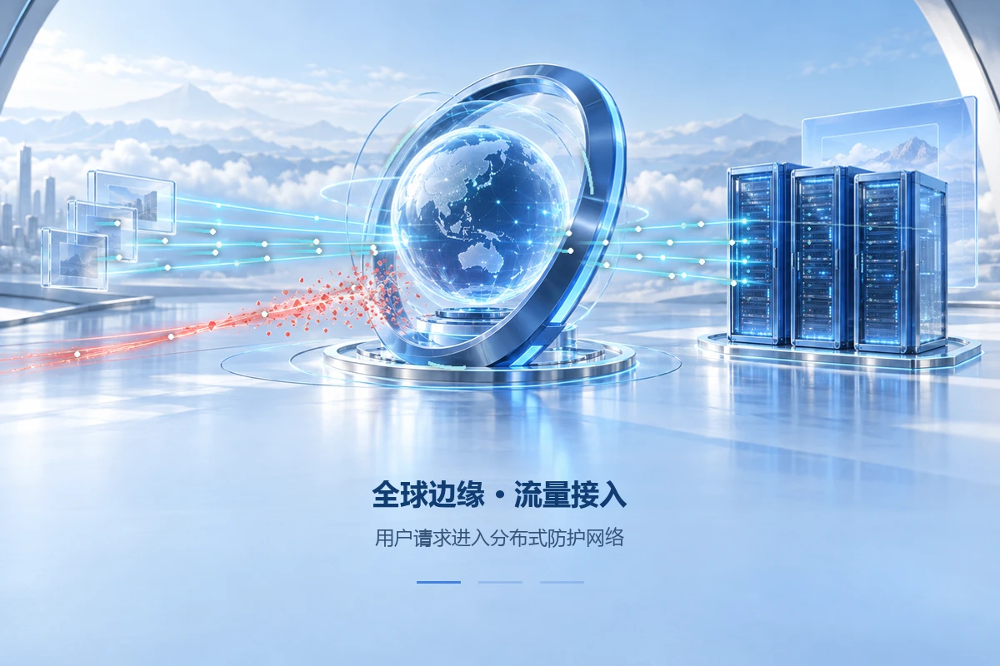
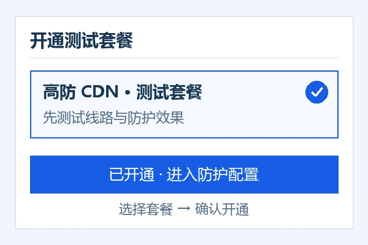
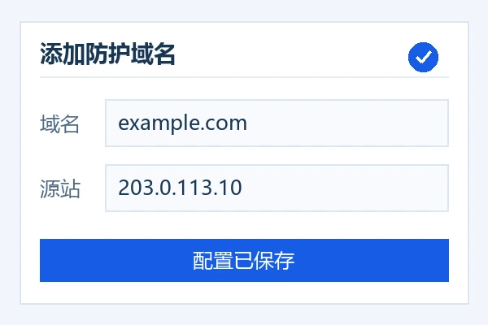
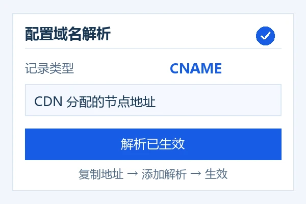
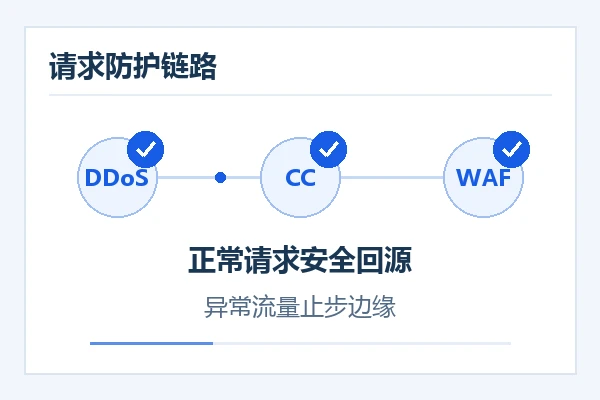

从流量到请求，层层防护
高防清洗、语义 WAF 与 JA4 指纹协同工作，
让恶意请求止步边缘，让正常访问继续。

就近接入
全球安全加速
让用户请求先到达附近的边缘节点，再沿优化线路访问业务。加速与防护，在同一条链路完成。
- 国内 BGP 多线
- 国内业务，多线接入
- 香港 CN2 / GIA
- 香港线路，连接全球
- 海外加速线路
- 覆盖美国、欧洲等访问场景
为不同业务，找到防护重点
从网站到游戏，再到金融与支付，
围绕业务的访问方式，配置合适的防护。
业务接入端客户端请求
- 浏览器访问
- 移动端 APP
- 业务接口
蓝易云网站安全接入CDN + WAF
- DDoS 流量清洗
- CC 行为防护
- 语义 WAF 检测
- JA4 指纹识别
- 源站 IP 隐藏
- HTTPS 安全传输
请求特征策略识别正常放行
业务服务端干净流量回源
- 网站源站
- 业务 API
- 后台管理
四步接入，开启持续防护
完成 CNAME 接入，让流量清洗、语义识别与源站防护按套餐策略协同工作。
开通测试
注册账号并选择套餐，先测试线路延迟、防护策略与回源稳定性，确认满意再购买

添加域名
在控制台添加域名与源站地址，按业务需要开启HTTPS、缓存、CC与WAF语义引擎

切换CNAME
将域名解析到蓝易云CDN节点，用户请求先进入边缘防护层，再由干净流量安全回源

持续防护
解析生效后，DDoS/CC清洗、CVE漏洞防护、JA4识别与语义WAF检测持续运行

上图为接入流程示意，具体操作以控制台为准。
查看接入教程 →